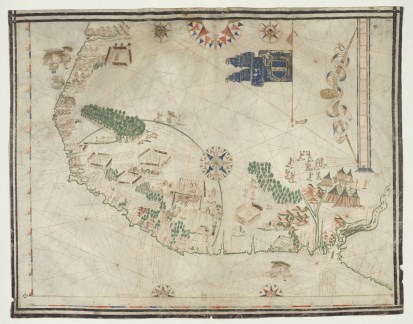
1579
Mapa francês no qual vemos a Ponta do Mucuripe e a barra do Ceará, demonstrando a presença de navios franceses conhecedores e usuários das águas calmas. Fonte/direitos: BnF ou Biblioteca Nacional da França.

Mapa francês no qual vemos a Ponta do Mucuripe e a barra do Ceará, demonstrando a presença de navios franceses conhecedores e usuários das águas calmas. Fonte/direitos: BnF ou Biblioteca Nacional da França.

Manuscrito português indicando o Mucuripe como área de águas calmas e própria para fundeio. Fonte: Biblioteca Nacional de Espanha
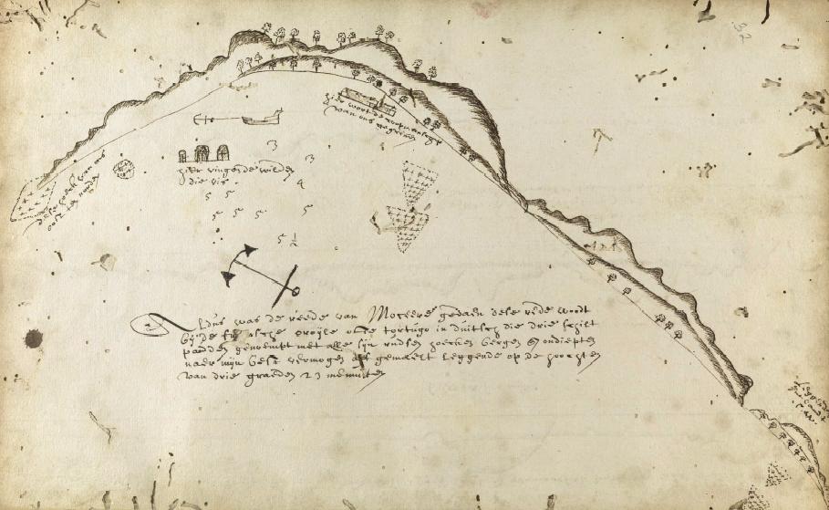
Manuscrito com mapas feito pelo neerlandês Hendrick Kop representando o litoral do ceará, dos arredores de Fortaleza até o Maranhão. Imagem da enseada do Mucuripe e que cita o local da pesca pelos índios e escâmbio de mercadorias entre os indios e os europeus. Fonte: Biblioteca Nacional do Brasil. pág 35
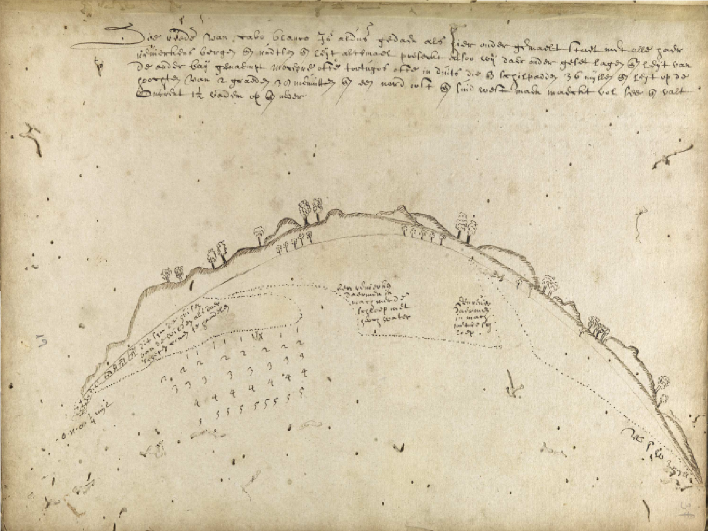
Manuscrito com mapas feito pelo neerlandês Hendrick Kop representando o litoral do ceará, dos arredores de Fortaleza até o Maranhão. Imagem da área que corresponde entre o Pecém e Jericoacoara, no qual vemos os pontos de escâmbo de mercadorias entre os índios e os europeus. Fonte: Biblioteca Nacional do Brasil. pág 40
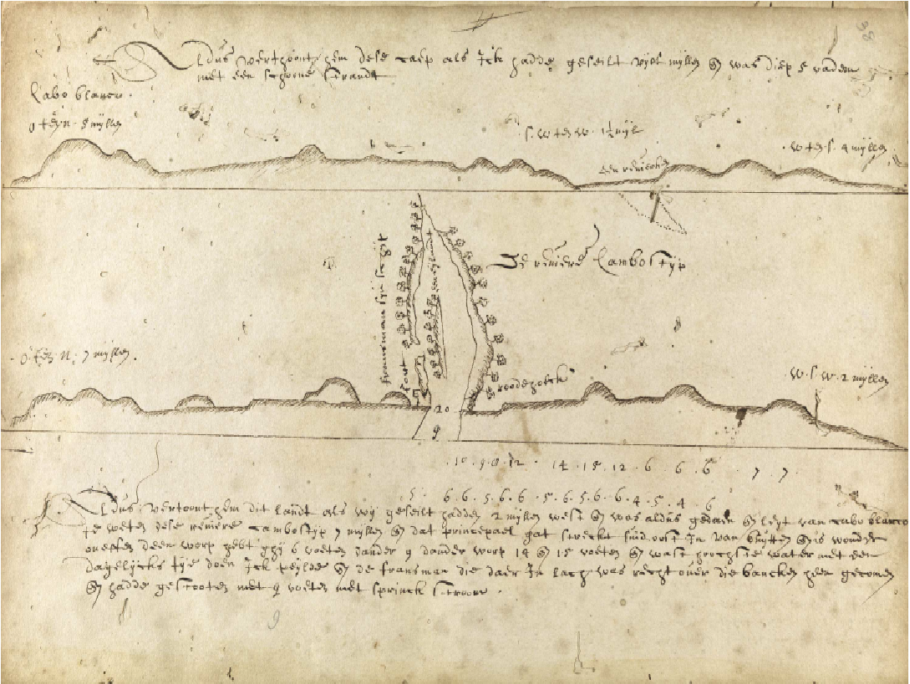
Manuscrito com mapas feito pelo neerlandês Hendrick Kop representando o litoral do ceará, dos arredores de Fortaleza até o Maranhão. Imagem da área da foz do rio Camocim, no qual vemos os pontos de escambo de mercadorias entre os índios e os europeus, inclusive a citação de uma carga de madeira pronta para os franceses. Fonte: Biblioteca Nacional do Brasil. pág 41
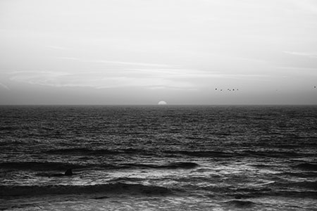
Utilização da baia de Camocim como ponto de parada e apoio a embarcações portuguesas.
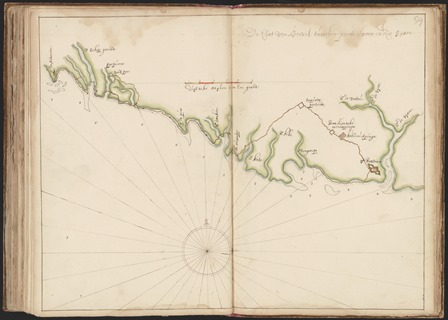
Mapas holandeses representando o litoral de Fortaleza e arredores para fins de navegação (enseada do Mucuripe e Barra do Ceará). Fonte: Arquivo Nacional do Países Baixos. Ref.: 4.VEL Y
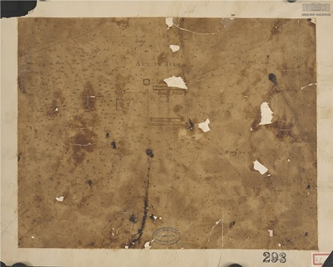
Mapas holandeses representando o litoral de Fortaleza e arredores para fins de navegação (enseada do Mucuripe e Barra do Ceará). Fonte: Arquivo Nacional do Países Baixos. Ref.: 4.VEL Y
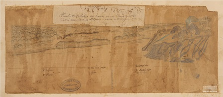
Desenho holandês (provavelmente de Frans Post) da barra do rio Ceará, local de fundeio e embarque/desembarque de mercadorias. Fonte: Arquivo Nacional do Brasil.
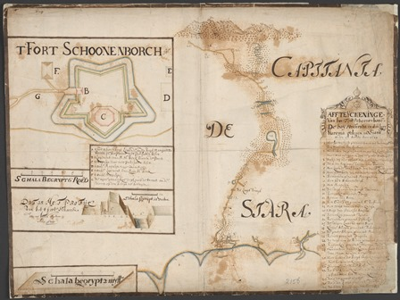
Mapa holandês de Ricardo Carr com representação destacada da Barra do Ceará, Praia de Iracema, ponta do Mucuripe e Prainha, todas áreas de fundeio usadas na época. Fonte: Arquivo Nacional do Países Baixos. 4.VEL 2156
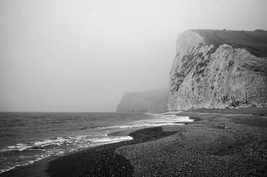
Grande desenvolvimento das estruturas de apoio para receber embarcações em Aracati, que já era ponto de apoio militar e passou a se destacar como produtor de carne e couro. Conhecido na época como Arraial de São José dos Barcos do Porto dos Barcos do Jaguaribe.
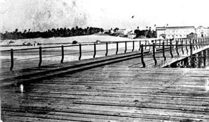
Trapiche construído em dezembro de 1805, no sítio chamado Prainha, em Fortaleza. Outros trapiches foram construídos mais tarde. Um deles pelo inglês Henry Ellery, o chamado trapiche do Ellery, localizado na mesma área, construído provavelmente, no ano de 1844.
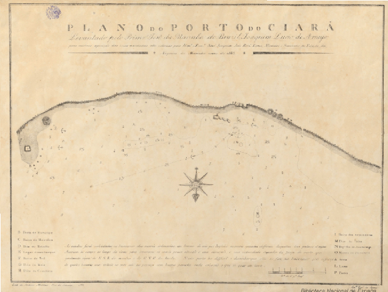
Carta Náutica elaborada em 1832-1833 com o levantamento da baía do Mucuripe; levantamento feito pelo Primeiro Tenente da Marinha do Brasil, Joaquim Lucio de Araujo, para mostrar a posição das boias de sinalização a serem colocadas.
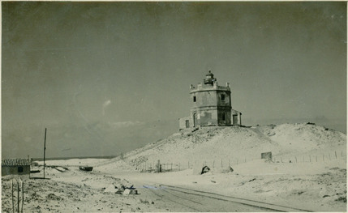
Início da construção do farol do Mucuripe realizada por escravos e que veio a finalizar no ano de 1846; Veio a ser desativado em 1950.
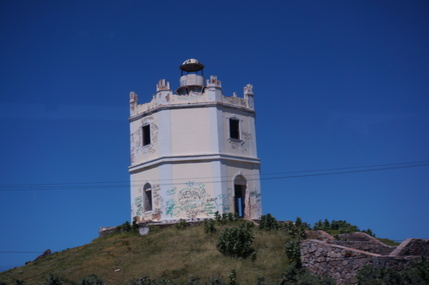
Conclusão das obras do Farol do Mucuripe, iniciadas em 1840 e que seguram a planta feita pelo Comandante de Armas, Conrado Jacob de Niemeyer. A lanterna ficava a 9,30 metros de altura e abrigava um candeeiro de oito bicos que conseguir ser visível a 10 milhas náuticas de distância.
Existe documentação da construção de um terceiro trapiche concluído em 21 de junho de 1857, tendo como construtor Fernando Hitzshky, medindo 154 metros de comprimento por 17,6m de largura.

Criação da Capitania dos Portos do Ceará, através do Decreto nº 1944 de 11 de julho de 1857, que passou a funcionar em um prédio na esquina da av Pessoa Anta, onde hoje funciona a Secretaria de Fazenda, onde permaneceu até o ano de 1900.
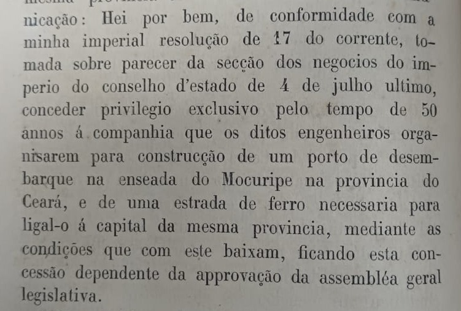
Concedido ao engenheiro Zózimo Barroso e John James Foster, pelo Decreto nº 3.689 de 24 de agosto de 1866, a construção de um porto na enseada do Mucuripe e a sua exploração por 50 anos. Essa concessão não vingou.
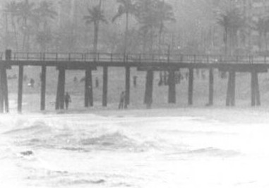
Em agosto a Companhia de Gás obteve a permissão para construir um trapiche para descarga de seu material no local do antigo porto.Os engenheiros ingleses Henrique Law e John Blount apresentaram um projeto de uma ponte situada no prolongamento da Rua Formosa (hoje Rua Barão do Rio Branco) destinada a atracação de navios de todos os calados para desembarque de passageiros e mercadorias. Deveria ter uma profundidade de 17 pés (pouco menos de 9 metros) - Marcus Davis Andrade Braga (imagem ilustrativa)
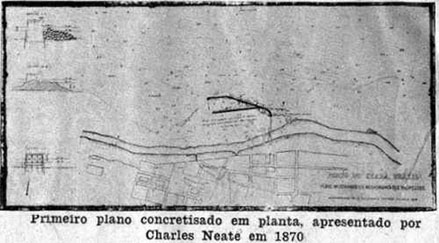
Primeiro plano concretizado em planta, apresentado por Charles Neate em 1870.

O Almanaque da Província do Ceará registra os portos existentes, relacionando: Porto da Capital, Porto do Camocim, Porto do Acaracú, Porto do Aracaty, Porto dos Arpuadores, entre outros. Lembrando que nem sempre os portos tinham estrutura como hoje conhecemos.

Em 14 de outubro de 1884 é lançada a pedra fundamental para construção do viaduto, nas obras do porto de Fortaleza, a cargo da firma Ceará Harbour Corporation Limited. Era a construção de pedra que teria um viaduto para separa-lo da praia, deixando a passagem livre da água. Imagem de 1888 de Adolpho Herbster
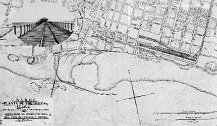
No final do Século XIX o engenheiro inglês John Hawkshaw apresenta um projeto para o porto de Fortaleza. Defende sua posição em frente a cidade argumentando: "...a cidade, que é asseada e cômoda, já existe, e despendeu-se considerável capital em armazéns, prensas de algodão, repartições e edifícios para a comércio".
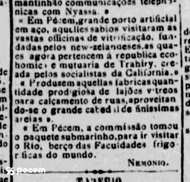
Registros do Pecém como porto do Ceará, com estrutura em aço e industrias na região. Matéria do jornal A Republica de 15 de maio de 1895.
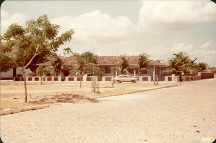
Criada a Delegacia da Capitania dos Portos em Camocim através do Decreto nº 3334 de 5 de julho de 1899, passando para Capatazia através do Decreto nº 3929 de 20 de fevereiro de 1901, sendo desativada logo após e sendo reativada somente em 1924 quando foi elevada a categoria de Agência.
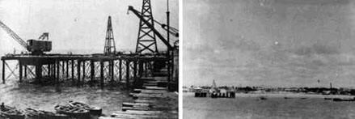
Com estrutura de ferro e piso de madeira, a Ponte Metálica teve início a sua construção a 18 de dezembro de 1902, havendo sido inaugurada a 26 de maio de 1906.
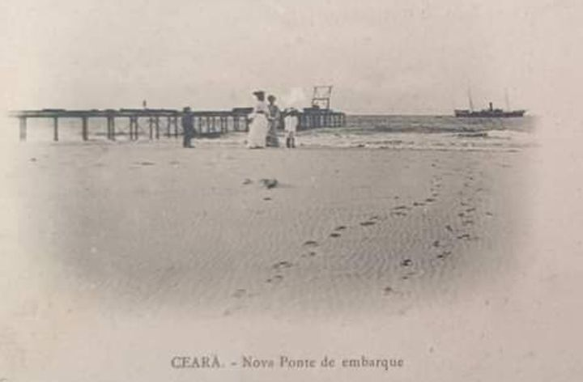
Em 26 de maio de 1906 entra em tráfego a Ponte Metálica, com projeto de Domingos Sérgio Saboia; Foi o 4º trapiche que Fortaleza conheceu.
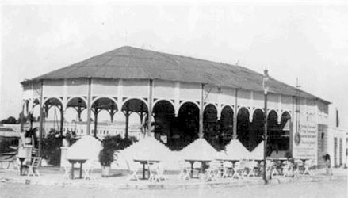
1910 Pavilhão Atlântico - A princípio, o edifício originalmente esteve montado como coreto na praça Marquês de Herval (hoje, José de Alencar) como se vê na foto ao lado. Foi transferido para próximo à Ponte Metálica, onde servia de local de espera para as embarcações que estavam chegando ou partindo.
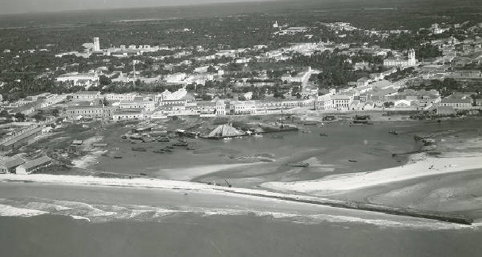
Paralisações das obras do cais da Booth Line no Poço da Draga. A área que antes era mar passou a compor um novo quarteirão em frente a Rua da Praia (hoje Av. Pessoa Anta), ganhando posteriormente construções no local como se vê nesta foto de 1937.
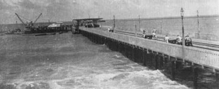
Paralelamente às instalações já existentes e operantes, outros estudos sobre o porto se sucederam até foi aprovado o Decreto n:° 14.555, com famoso projeto de Lucas Bicalho, Inspetor Federal de Portos, Rios e Canais. Os trabalhos de construção do que viria a ser chamada a PONTE DOS INGLESES, ficaram a cargo o engenheiro J. H. Kirwood. As obras foram suspensas à falta de crédito orçamentário, e sofreram o desgaste natural do tempo e das marés.
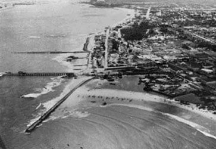
Devido ao comprometimento da estrutura metálica a mesma foi reconstruída em concreto, pelo engenheiro Francisco Sabóia de Albuquerque, sendo reinaugurada no dia 24.2.1929, com o nome de VIADUTO MOREIRA DA ROCHA.
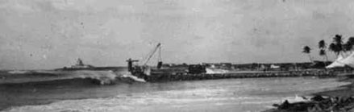
Com base nos estudos feitos em Fortaleza, o Dr. Hor Meyll apresentou, em de janeiro de 1930, o seu projeto de construção do porto do Ceará, em Mucuripe, dizendo: "Ou temos o porto na enseada de Mucuripe, ou nunca teremos um porto em Fortaleza."
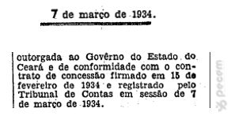
É assinado o contrato de concessão passando o Porto do Mucuripe para o Governo do Estado do Ceará pelo prazo de 60 anos.
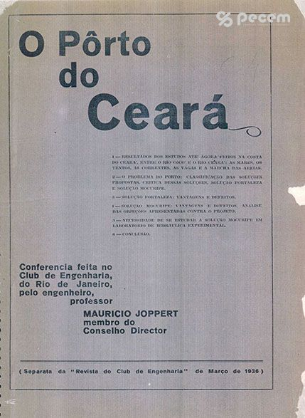
Conferência sobre "O Pôrto do Ceará" no Club de Engenharia do Rio de Janeiro, apresentando resultados dos estudos da costa do ceará, os problemas do porto e soluções, vantagens e defeitos das propostas de soluções e necessidade de estudo sobre o Mucuripe.
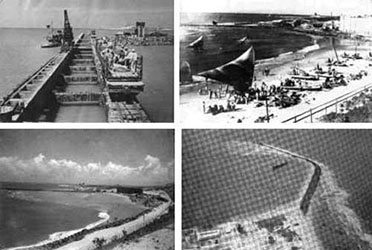
Getúlio Vargas com o Decreto-Lei n0 544 de 7 de julho de 1938 decide sobre a localização do novo porto de Fortaleza e definindo a enseada do Mucuripe como o novo local.
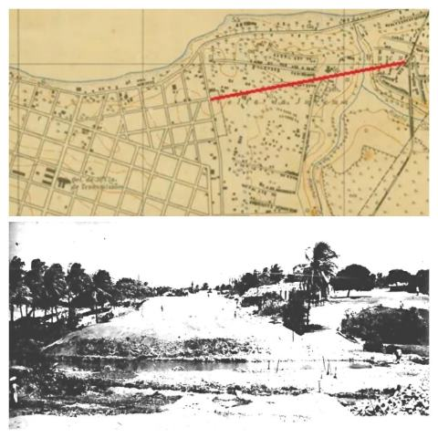
Iniciam as obras de abertura e construção da via de acesso para o Porto do Mucuripe, que na época já estava em obras. Destaque em mapa de 1945 do trajeto da nova avenida. Fonte: Antonio Neto.
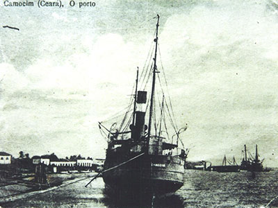
Início das obras das estruturas do Porto de Camocim com o então ministro Ernani do Amaral Peixoto; inauguradas mesmo antes de concluídas e que em 1961 ainda transcorriam lentamente. O acesso aos navios se davam por meio de barcaças que faziam levavam cargas e passageiros de forma precária.

Através do Decreto nº 57.103 de 19 de outubro de 1965, é transferida a concessão do Porto do Mucuripe da administração do Governo do Estado do Ceará para a recém criada Companhia Docas do Ceará. O Governo do Estado do Ceará administrava o Porto do Mucuripe desde março de 1934.
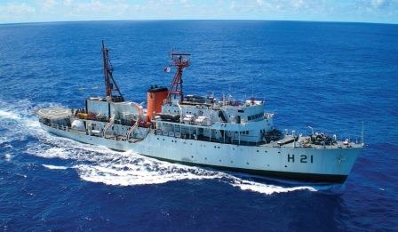
Chegada (no mês de novembro) do navio Sirius da frota do Grupamento de Navios Hidroceanográficos – GNHo da Marinha do Brasil para iniciar os levantamentos ecobatimétricos na costa do Estado.
Concepção do Complexo Industrial e Portuário do Pecém e contratação de projetos básicos de engenharia.
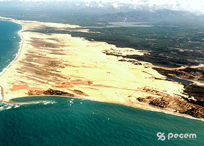
Início das obras do Terminal Portuário do Pecém e obras de infra-estrutura.
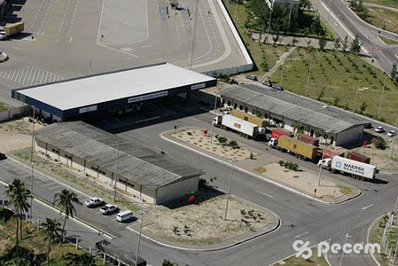
Conclusão das obras da Rodovia de Acesso.
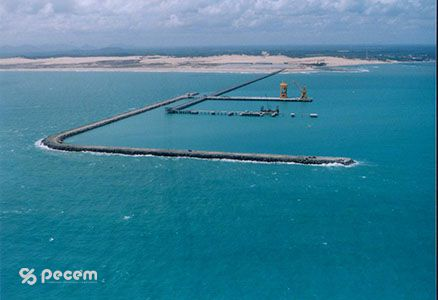
Conclusão das obras da Ponte de Acesso e do Pier 1 do Terminal e do Sistema Elétrico do CIPP.
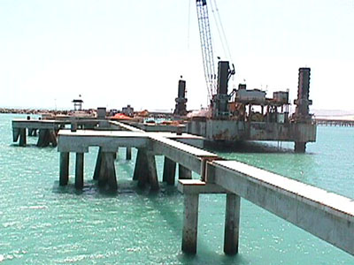
Conclusão das obra do Píer 2 no Terminal Portuário do Pecém.
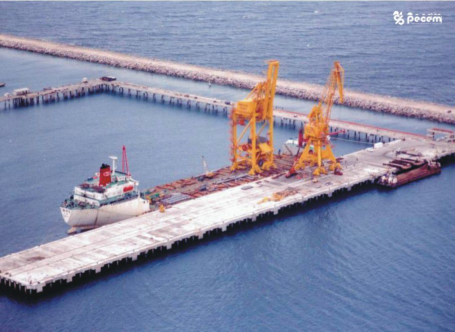
Desembarca do píer 1 os dois super guindastes fabricados pela ZPMC. Os primeiros equipamentos de grande porto do Terminal Portuário do Pecém.
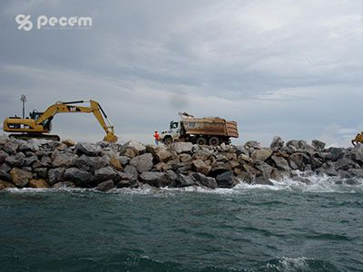
Conclusão das obras de ampliação do quebra mar no Terminal Portuário do Pecém.
Assinatura do Contrato de Adesão nº 091/2001 pelo Governo do Estado do Ceará e Ministério dos Transportes para a operação do Terminal Portuário do Pecém.
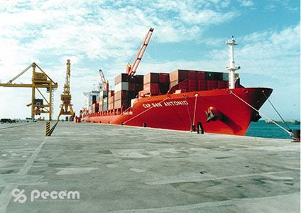
Início das operações comerciais do Terminal com a movimentação de carga Navio Capitão San Antonio.
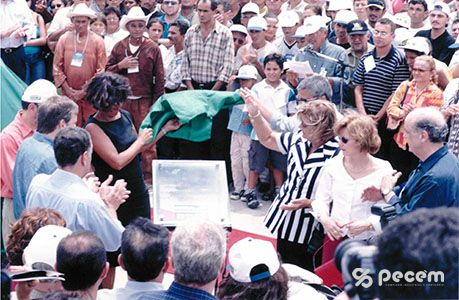
Inauguração Oficial do Terminal Portuário do Pecém.
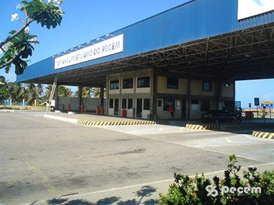
Alfandegamento do Terminal Portuário do Pecém a título permanente pela SRRF da 3ª Região.
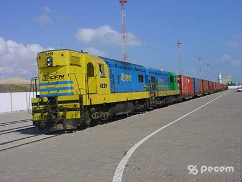
Início das operações de transporte ferroviário no Terminal Portuário do Pecém.
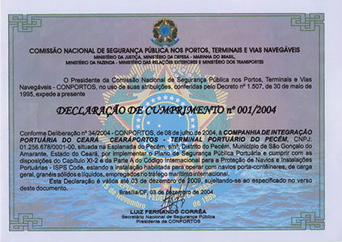
Certificação do Terminal Portuário do Pecém com o ISPS-CODE. Primeiro porto no país a obter a certificação.
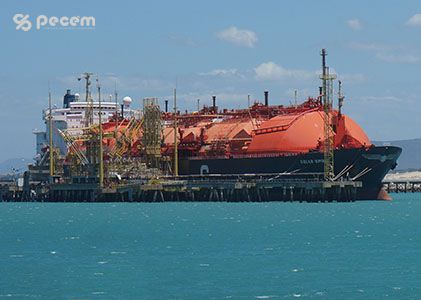
Inaugurado o terminal de regaseificação de GNL no píer 2 do Terminal Portuário do Pecém.
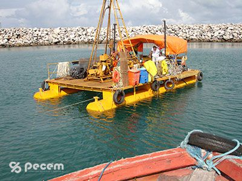
Sondagens para construção do TMUT - Terminal de Múltiplas Utilidades do Porto do Pecém.
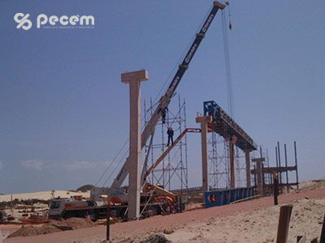
Obras de construção da 1ª esteira a ser utilizada com carvão.
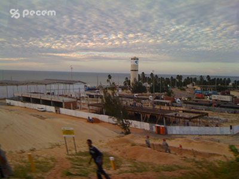
Obras de Construção do Bloco de Utilidades e Serviços, com restaurante, salas comerciais e caixas eletrônicos para apoio às empresas que atuam nas operações no Terminal Portuário do Pecém.
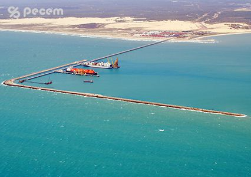
Finalização da ampliação do quebra mar do Terminal Portuário do Pecém.
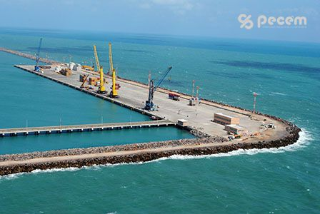
Inauguração do TMUT - Terminal de Multiplas utilidades do Porto do Pecém com dois novos berços de atracação.
Chegada dos dois novos STS adquiridos pela operadora APM no Terminal Portuário do Pecém.
Inauguração do descarregador de minério e início de funcionamento da correia transportadora de minério, com 8,6km de extensão, ligando o Porto do Pecém à Siderúrgica.
Em Agosto de 2016 o Porto do Pecém inaugura os novos berços do TMUT, de números 7 e 8.

Inaugurado em 18 de setembro o o novo farol do Mucuripe com 71,10 metros de altura e foi construído ao lado do antigo de 22 metros de altura e que foi construído em 1958. O novo farol de 71,10 metros de altura passou a ser o maior farol tradicional das Américas e o sexto maior do mundo.
10 de Outubro de 2017 - Assinatura da Lei de modernização da Cearáportos, companhia administradora do Terminal Portuário do Pecém que passou a ser denominada Companhia de Desenvolvimento do Complexo Industrial e Portuário do Pecém S.A. – CIPP S.A.
Em 19 de outubro de 2018 é celebrado pelo Governador Camilo Santana em solenidade no Palácio da Abolição, a parceria com o Porto de Roterdã, da Holanda. A participação holandesa no complexo envolve investimento de 30% nas ações da Companhia.
Assinado o Termo de Recebimento das obras de construção da Ponte 2 e Gate 2 do Porto do Pecém.
Em 10 de fevereiro de 2022 se realiza no TMUT no Porto do Pecém com a presença do governador Camilo Santana, a cerimônia de inauguração da segunda expansão, compreendendo o Gate 2, Ponte 2 e o berço 10.
Inicia as obras de ampliação do pátio de armazenagem do Porto do Pecém, incorporando a área do antigo canteiro de obras.